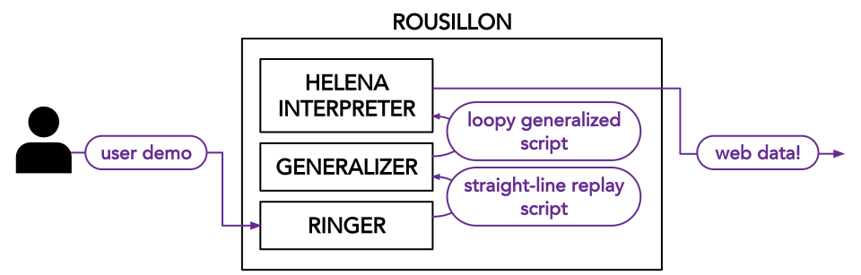

Helena is a high-level programming language for web automation.
It comes with Rousillon, a programming-by-demonstration (PBD) tool for writing Helena programs.
Just open the Rousillon browser extension, demonstrate how to collect the first row of a dataset, then let Rousillon write a program for collecting the remaining rows.
Helena
is a high-level programming language for automating web tasks -- clicks, form interactions, data collection.
Draft a Helena program by recording a browser interaction, then use the Helena editor to adapt, extend, and understand it.
Rousillon
is a Chrome extension for writing programs in the Helena language using PBD techniques.
Using the extension, users can demonstrate how to collect the first row of a multi-relational dataset and receive a generalized Helena program for collecting remaining data.
Ringer
is a browser record and replay tool.
Ringer records a user demonstration of a web interaction and writes a straight-line replay script in a low-level language.
The replay script is designed to repeat the same interaction on the same webpages, even as the pages' structures and contents change.
Rousillon uses Ringer as a building block to record user interactions, then generalizes the straight-line Ringer interactions into loopy, high-level Helena programs.
Housing Markets
We are partnering with a team of sociologists to study the practices and attitudes of rental Property Owners/Managers (POMs) in a tight housing market, scraping rental listings to learn how POM practices vary across neighborhoods.
Hurricane Harvey
We are collaborating with a small team of civil and environmental engineers to study the effects of Hurricane Harvey by collecting a wide variety of datasets, from rescue request listings to power outage details.
Charitable Foundation Communications
We are providing data to a group of public policy researchers studying how charitable foundations communicate with their supporters, collecting data from a variety of social media and and community foundation sites.
And More!
We have also been collecting data with collaborators from backgrounds ranging from economics to art to environment and forest sciences. Check back as we keep adding details on our collaborations!
The tools described on this page build on each other. The Rousillon browser extension uses Ringer to record user interactions. Ringer's output is a straight-line replay script in a low-level language, which we feed as input to a generalizer. The generalizer produces a loopy Helena program. Finally, Rousillon runs the Helena program to execute the web task or collect the target web data. The diagram below illustrates how the components interact.
